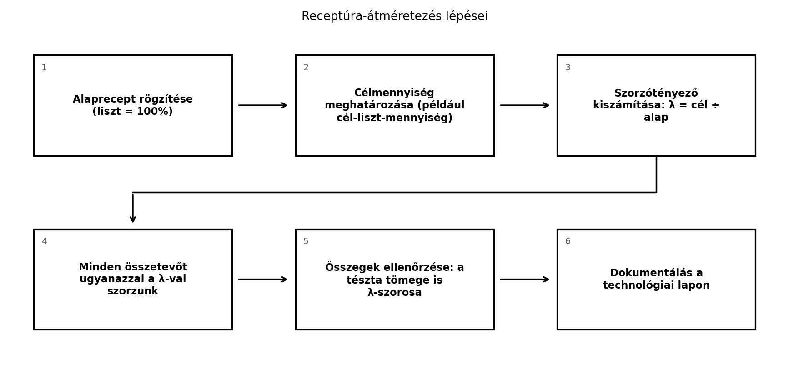
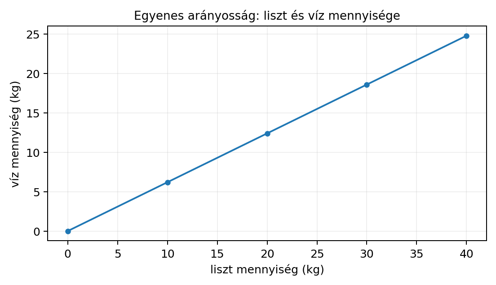

Ma hajnalban egy vendéglátói rendelés miatt nem hat, hanem huszonnyolc darab kenyeret kell sütnöd. A megszokott recepted hat kg liszthez szól, a rendelés viszont huszonnyolc kg lisztet igényel. Ha lisztből többet veszel, de a vizet, élesztőt és sót csak „szemre” növeled, a tészta állaga, a kelesztési idő és a kenyér minősége változik meg. Az arányosság és az aránypár azért alapvető pék tudás, mert a receptúrát mindig úgy kell méretezni, hogy az összes összetevő egymáshoz viszonyított aránya azonos maradjon. A pék napi munkájában ez nem csupán iskolai feladat: reggel a rendeléshez, délután a holnapi szükséglethez igazítod az anyagmennyiségeket, és ha egy számítást elrontasz, az egész dagasztás kárba mehet.
A receptúra átméretezése mindig ugyanazt a logikát követi: az alapreceptből indulunk, meghatározzuk a célmennyiséget, kiszámítjuk a szorzót, majd minden összetevőt ugyanazzal a szorzóval válthatunk át. Az alábbi folyamatábra ezt a gondolatmenetet mutatja.

A számítás lényege, hogy az összetevők közötti arány nem változik, csak a tétel nagysága. Ha tíz kg liszthez 6,2 kg vizet számolunk, akkor húsz kg liszthez 12,4 kg-ot, harminc kg liszthez 18,6 kg-ot. A kapcsolat egyenes arányosság, és ezt egy későbbi alfejezetben részletesen is használjuk (Százalékszámítás és a lisztre vetített (sütőipari) százalék).

A grafikon egyenes vonala azt mutatja, hogy ha a lisztet kétszeresére növeljük, a víz is kétszeresére nő, harmadszoros lisztnél a víz is háromszoros.
Definíció. Két mennyiség akkor egyenesen arányos, ha az egyik mennyiséget valahányszorosára növeljük vagy csökkentjük, a másik mennyiség is ugyanannyiszorosára változik. A hányadosuk állandó.
Összefüggés. Ha egyenesen arányos -szel, akkor létezik olyan állandó, hogy
A pék nyelvére lefordítva: ha a liszt mennyisége , és a víz mennyisége , akkor egy adott tésztánál
Definíció. Az aránypár két aránynak az egyenlősége. Az aránypárban -t és -t „külső tagoknak”, -t és -t „belső tagoknak” nevezzük. Az aránypárra igaz, hogy a külső tagok szorzata egyenlő a belső tagok szorzatával:
Szabály. A hármasszabály egyenes arányosság esetén úgy működik, hogy ismerünk két összetartozó értéket ( és ), és keressük az -höz tartozó értéket. Az egyenes arányosság miatt
ahol . A hármasszabály tehát nem önálló trükk, hanem az egyenes arányosság közvetlen alkalmazása.
Példa. Ha kg liszthez kg élesztőt kell adni, akkor kg liszthez:
A hányados (0,035 kg élesztő / 1 kg liszt) az élesztő lisztre vetített aránya, ami ebben a receptben állandó.
A gyakorlatban a legegyszerűbb módszer a szorzótényező használata. A szorzótényezőt (lambda) görög betűvel jelöljük, és mindig a célmennyiség és az alapmennyiség hányadosaként számoljuk.
Összefüggés. Legyen az alaprecept lisztmennyisége , a célrecept lisztmennyisége . Ekkor a szorzótényező:
Minden összetevő új mennyiségét úgy kapjuk, hogy az alapmennyiséget megszorozzuk -val:
Szabály. Ha a receptúrát a liszt alapján méretezzük át, a szorzót nem szabad összekeverni a lisztre vetített százalékokkal. A lisztre vetített százalék (pl. a víz 62%) az arányt adja meg, a pedig azt mutatja, hányszoros tételt készítünk. Előbb kiszámítjuk a -t, utána minden anyagot szorzunk.
Számítás. Alaprecept: 10 kg liszt, 6,2 kg víz, 0,35 kg élesztő, 0,18 kg só. Céltétel: 32 kg liszt. Számítsd ki az új anyagmennyiségeket!
Az alaprecept tésztatömege: kg. Ellenőrzés: kg. ∎
Megjegyzés. A só kerekítése üzemi mérlegen 0,58 kg gyakorlatias, de a technológiai lapon a pontos értéket is érdemes feltüntetni, mert a só befolyásolja a tészta szerkezetét és az élesztő működését. A kerekítés hibája kis tételnél elfogadható, nagy tételnél viszont halmozódhat; mindig a mérleg pontosságához igazodva kerekíts.
Az alábbi táblázatos ábra ugyanezt a számítást egy lapon mutatja: felül a szorzótényező, középen minden sor „alap × λ = új” szerkezete, alatta az ellenőrző sor, legalul pedig a leggyakoribb hiba, amikor csak a liszt nő.
Az ellenőrző sort ne hagyd ki: ha az új tészta tömege nem egyezik a λ-szoros alaptésztával, valamelyik sort elfelejtetted szorozni. A HTML-kiadás átméretezőjében a fejezet három példáját (10 → 32 kg, 8 → 22 kg, 35 → 14 kg) előbeállításként választhatod, megadhatod a célt darabszám × darabtömeg formában is, és a „csak a lisztet méretezem át” hibamódban láthatod, mennyire leesik a tészta TA-ja.
A péküzemben nem minden mennyiség egyenesen arányos. Ha több dolgozó vagy több gép ugyanazt a munkát egyszerre végzi, a munka időtartama csökken, nem nő.
Definíció. Két mennyiség akkor fordítottan arányos, ha az egyik mennyiséget valahányszorosára növeljük, a másik mennyiség ugyanannyiad részére csökken. A szorzatuk állandó.
Összefüggés. Ha fordítottan arányos -szel, akkor
ahol egy állandó. Ha géppel idő alatt készül el a munka, és géppel idő alatt, akkor ugyanakkora összmunkával
Ebből a keresett idő:
Számítás. Két dolgozó 50 perc alatt formáz meg 600 kiflit. Mennyi idő alatt végez öt azonos tempóban dolgozó pék ugyanennyivel?
A dolgozók száma és a munkaidő fordítottan arányos, mert ugyanazt a munkamennyiséget kell elvégezni:
Ellenőrzés: „ember-perc”, „ember-perc”. A szorzat állandó. ∎
Megjegyzés. A dagasztás ideje a technológiai lap szerint adagonként állandó: a gépek száma csak azt befolyásolja, hány adag fut párhuzamosan, egy adag dagasztási ideje nem rövidül. A fordított arányosság az osztható, párhuzamosítható munkára (formázás, osztás, csomagolás) igaz.
Figyelem. A fordított arányosság csak akkor igaz szigorúan, ha a dolgozók vagy gépek valóban azonos kapacitásúak, nincs várakozás, és a munka párhuzamosan szervezhető. A valóságban az anyagmozgatás, a gépbe töltés és az ürítés időt igényel, ezért a tényleges megtakarítás kisebb lehet. Számoláskor tanulási példaként kezeljük a tiszta arányt, de üzemszervezésnél a köztes idők is beleszámítanak.
Gyakori feladat, hogy egy nagyobb tésztatételt meghatározott arányban kell felosztani: például 72 kg tésztából kell készíteni kisebb és nagyobb darabokat 3 : 5 : 4 arányban. Ilyenkor előbb az arányszámokat összeadjuk, majd az egészet elosztjuk ezzel az összeggel, hogy megkapjuk az egy részre jutó mennyiséget, végül az egyes részeket az arányszámmal szorozzuk.
Összefüggés. Legyen a felosztandó mennyiség , az arányszámok . Az arányszámok összege:
Az egy részre jutó mennyiség:
Az egyes részek:
Számítás. 72 kg tésztát 3 : 5 : 4 arányban kell felosztani.
Ellenőrzés: kg. ∎
Továbbvitt eredmény. Az itt tanult átméretezési módszert használjuk minden olyan alfejezetben, ahol receptúrából anyagszükségletet kell számítani: az Anyagnorma, rendelésből anyagszükséglet és dagasztásonkénti anyagmennyiség című alfejezetben, valamint a Töltelékek, krémek, bevonatok és töltelékszámítás során. A lisztre vetített arány kifejezését a Százalékszámítás és a lisztre vetített (sütőipari) százalék alfejezet pontosítja, ahol a százalékos alak használatát is megtanulod. Az élesztő és más kis adagú anyagok számításánál is ugyanezzel a szorzóval dolgozunk.
A tanműhely technológiai lapján a következő alaprecept szerepel 8 kg liszthez:
| Nyersanyag | Mennyiség (kg) |
|---|---|
| búzaliszt BL 80 | 8,00 |
| víz | 4,96 |
| sütőélesztő | 0,28 |
| só | 0,16 |
| Tészta összesen | 13,40 |
A rendeléshez 22 kg lisztből kell tésztát készíteni.
Megoldás. Először a szorzótényezőt számítjuk:
Ezután minden anyagot szorzunk:
Összeg ellenőrzése:
Az alap tésztatömeg kg, és kg, tehát a számolás rendben van. ∎
Allergén. A búzaliszt glutént tartalmaz. Az átméretezés nem változtatja meg az allergén jelleget, csak a mennyiséget. A technológiai lapon a megnövelt tételben is pontosan fel kell tüntetni a gluténtartalmú lisztet, és figyelni kell arra, hogy a nagyobb lisztmennyiség pora ne szennyezzen gluténmentes munkaterületet.
A tanműhelyben 35 kg lisztre szóló recept van, de csak 14 kg lisztet használnak fel, mert kisebb a napi rendelés. Az eredeti recept: liszt 35 kg, víz 21 kg, élesztő 1,05 kg, só 0,70 kg.
Megoldás. A szorzótényező:
Az új anyagmennyiségek:
Ellenőrzés: a tészta tömege az eredeti receptben kg; az új tételben kg; és kg. ∎
Egy pék egyedül 48 perc alatt osztja és gömbölyíti a napi tésztát. Ha azonos szakértelemmel ketten dolgoznak párhuzamosan, mennyi idő alatt végeznek?
Megoldás. A dolgozók száma és az idő fordítottan arányos:
Ellenőrzés: „ember-perc”. ∎
Megjegyzés. A példa feltételezi, hogy a munka párhuzamosítható, és nincs a második dolgozónak betanítási ideje. Valós helyzetben a társ belépésekor rövid egyeztetés is kell, ezért az időt soha nem számoljuk a tiszta aránypár szerint kritikátlanul.
Egy kis pékségben a hétvégi rendelés 18 kg liszthez szólt, de az alkalmazott a 10 kg-os alapreceptet vette elő. A lisztre jól rászámolt, a vizet azonban a 10 kg-os recept szerint mérte ki, mert „úgyis csak kicsit szárazabb lesz”. A sütőipari százalék szerint a víz a liszt 62%-a kellett volna, vagyis 18 kg liszthez kg víz. Ehelyett csak 6,2 kg vizet adott hozzá, mert a 10 kg-os sort másolta. A tészta rendkívül kemény lett, a dagasztógép leállításkor láthatóan küzdött, a kelesztés lassú volt, a kenyér pedig alacsony, sűrű bélzetű, repedezett héjú lett. A hiba nem az alapreceptben, hanem a szorzó hiányában volt. A tétel teljes anyagköltsége elveszett, és a vevői reklamáció is megérkezett.
Tanulság. A receptúra átméretezésekor soha nem elég a fő összetevőt (lisztet) növelni. Minden összetevőt ugyanazzal a szorzóval kell szorozni, és a tészta tömegét is ellenőrizni kell.
Az átméretezés minőségi ellenőrzése a tészta állagán, a tésztahőmérsékleten és a kelesztési időn keresztül történik. Ha a szorzó helyes, a tészta ugyanolyan lágy, rugalmas és sima felületű, mint az alaprecept esetén. Ha a tészta keményebb vagy lágyabb, először a mennyiségeket kell visszaellenőrizni: a mérlegelési jegyzőkönyvben rögzített értékeket összevetjük a technológiai lappal. A tésztahőmérsékletnek és a kelési időnek is az üzemi technológiai lapon szereplő tartományban kell maradnia (ellenőrizendő: az üzemi technológiai lap és a HACCP-terv szerinti célérték). Az átszámított tésztatömeg alapján a dagasztógép kapacitását is ellenőrizni kell: a megnövelt tétel ne haladja meg a gép névleges kapacitását, mert az túlterhelést és balesetveszélyt okoz.
A szorzót rossz irányban számolják. Ha 10 kg lisztes receptből 32 kg-ra növelünk, a szorzó , nem pedig . Fordított aránypárnál is gyakori a felcserélés. A hiba elkerülése: a szorzót mindig úgy állítsuk fel, hogy a célt osztjuk az alappal, és a mértékegységek kiesnek.
Csak a lisztet és a vizet méretezik át, a sót, élesztőt elfelejtik. Ez a fenti valós esettel (ott a víz maradt el) rokon hiba; a só és az élesztő elfelejtése ugyanilyen gyakori. A só és az élesztő kis tömegű, de technológiai hatása nagy. Minden sort szorozni kell, a táblázatot soronként kell ellenőrizni.
Az összegek ellenőrzése elmarad. A számított tészta tömegét nem vetik össze a szorzóval. A legegyszerűbb ellenőrzés: a tészta össztömege is λ-szorosa az alap tésztatömegnek. Ha nem, akkor valamelyik összetevő kimaradt vagy rossz a szorzó.
Az arányos osztásnál az arányszámokkal közvetlenül szorozzák az egészet. Például 72 kg tésztát 3 : 5 : 4 arányban nem 3 · 72 = 216 kg és így tovább, hanem az arányszámok összegével osztani kell. Az ellenőrzés: a részek összege mindig az eredeti tömeg.
Igaz vagy hamis? A hármasszabály egyenes arányosság esetén csak akkor használható, ha a két mennyiség hányadosa állandó. Indokold!
Számold ki: 12 kg lisztből készült receptből 18 kg liszthez mekkora a λ szorzó?
Egy 24 kg tésztát 3 : 5 arányban osztasz fel. Mennyi lesz a két rész?
Hat dolgozó egy munkát 6 óra alatt végez el. Ha ketten hiányoznak, mennyi idő alatt végez a megmaradt négy dolgozó, ha az arányosság tiszta?
Mi a hiba ebben a gondolatmenetben? „Ha 8 kg lisztre 0,28 kg élesztő kell, akkor 12 kg lisztre 0,28 · 8 / 12 = 0,19 kg élesztő kell.”
1. feladat (A). Magyarázd meg, mi a különbség egyenes és fordított arányosság között, és adj mindkettőre egy péküzemi példát.
2. feladat (A). Egy teknő szabványos receptje 6 kg liszthez szól: víz 3,72 kg, élesztő 0,21 kg, só 0,12 kg. Számítsd ki a szorzót és a mennyiségeket 15 kg lisztre.
3. feladat (B). Egy 25 kg lisztes receptből 9 kg lisztes tételt akarsz készíteni. Az eredeti mennyiségek: liszt 25 kg, víz 15,25 kg, élesztő 0,875 kg, só 0,50 kg, margarin 1,25 kg. Számítsd ki az új mennyiségeket, és ellenőrizd a tészta tömegét is.
4. feladat (B). Egy 36 kg-os tésztát 3 : 4 : 5 arányban kell felosztani három kelesztőkosárba. Mennyi tészta kerül az egyes kosarakba?
5. feladat (C). Egy pékségben a 10 kg lisztes alaprecept szerinti tészta tömege 16,73 kg. A pék 26 kg lisztre számol át, de a vizet véletlenül a 10 kg-os recept szerint hagyja, a többit viszont jól szorozza. A 10 kg-os receptben a víz 6,2 kg. Hány kg vizet kellett volna adni, mennyit adott ténylegesen, és mennyivel lett kisebb a tészta tömege?
6. feladat (D). Gyakorlati feladat. Vegyél elő egy 10 kg-os osztású technológiai lapot. Válaszd ki a λ-t úgy, hogy 17,5 kg lisztre számolj át. Végezd el a mérést a tanműhely mérlegén, és dokumentáld a naplóban a kiszámított és a ténylegesen bemért mennyiségeket. Hasonlítsd össze a tészta állagát az alaprecepttel.
Igaz. Az egyenes arányosság azt jelenti, hogy a két mennyiség hányadosa állandó (). A hármasszabály erre épül.
.
Az arányszámok összege , egy rész kg, így a részek kg és kg.
Tiszta fordított arányossággal: óra.
A gondolatmenet fordított arányt alkalmaz egyenes arány helyett. Helyes: kg élesztő.
1. feladat. Egyenes arányosságnál a két mennyiség hányadosa állandó, pl. ha kétszer annyi lisztet veszünk, kétszer annyi vizet kell venni. Fordított arányosságnál a szorzat állandó, pl. ha kétszer annyi gép dolgozik ugyanazon a tételen, az idő a felére csökken.
2. feladat. . Víz: kg. Élesztő: kg. Só: kg. Liszt: kg. Tészta: kg.
3. feladat. . Liszt: kg. Víz: kg. Élesztő: kg. Só: kg. Margarin: kg. Tészta: kg. Az eredeti tészta: kg; kg. ∎
4. feladat. Arányszámok összege: . Egy rész: kg. Részek: kg, kg, kg. Ellenőrzés: kg.
5. feladat. Helyes szorzó: . Helyes vízmennyiség: kg. Ténylegesen 6,2 kg vizet adott, tehát kg víz hiányzott. A tészta tömege kisebb lett 9,92 kg-mal.
6. feladat. A 17,5 kg-os tételre . A technológiai lapon minden mennyiséget ezzel a szorzóval kell átszámítani. A naplóban a kiszámított és a mért mennyiségek eltérése kimutatja a mérleg pontosságát és a bemérési hibát. A tészta állagát az alaprecepttel összevetve a vízfelvételt is ellenőrizni lehet.
Az arányosság a receptúrák és üzemi munkák alapvető számítási eszköze. Egyenes arányosságnál a két mennyiség hányadosa állandó (), ezért a hármasszabály a keresett értéket a összefüggéssel adja. A receptúra növelésekor vagy csökkentésekor a szorzótényező , és minden összetevőt ugyanezzel a -val szorzunk. Az átméretezés ellenőrzése a tészta össztömegének visszaszámolásával történik. Fordított arányosságnál a szorzat állandó (), ezért több gép vagy dolgozó esetén az idő csökken. Arányos osztásnál az arányszámok összegét kell képezni, az egy részre jutó tömeget kiszámítani, majd az egyes részeket az arányszámmal szorozni. A lisztre vetített százalékot nem szabad összekeverni a szorzóval; az előbbi az arányt, az utóbbi a tétel nagyságát adja meg. Ezt a módszert használjuk a későbbi anyagnorma-, töltelék- és tésztahozam-számításokban is.
Az alfejezet a matematikai arányosság és aránypár általános, tankönyvi szintű módszereit használja; a számítási szabályok az alapoktatásban és a pék szakmai gyakorlatban is ismertek. A receptméretezési szorzó és az ellenőrzés módja a sütőipari üzemi logika szerint került leírásra. Jogszabályt, Élelmiszerkönyv-előírást vagy szabványt az alfejezet nem idéz, ezért forrás-ellenőrzésre itt nincs szükség. Ahol a technológiai paraméterek (például a vízliszt arány, az élesztő- és sómennyiség) megjelennek, azok tanulási példák, nem üzemi vagy jogszabályi előírások; üzemi felhasználáshoz mindig az aktuális technológiai lapot és a gyártói adatokat kell ellenőrizni.